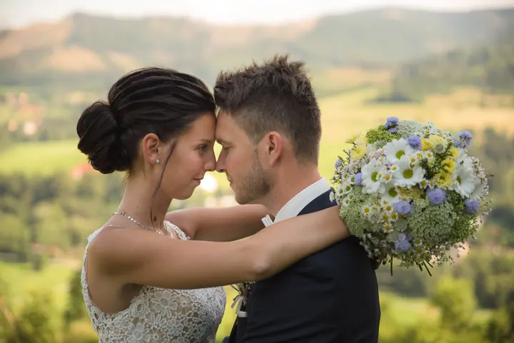

jedna
Svatební focení
Fotím celý svatební den, od příprav přes obřad a hostinu až po první tanec a večerní zábavu. Balíček zahrnuje 10 hodin focení a předsvatební focení zdarma.

Svatební fotograf · Ostrava, Karviná, Frýdek-Místek

Jmenuji se Richard Lapiš, pocházím z Karviné a žiji v Rychvaldě. Fotím svatby na Ostravsku, páry, rodiny a děti venku v přírodě i u vás doma. Nejraději mám portréty pod širým nebem a focení psů.
Více o mně
Co fotím
jedna
Fotím celý svatební den, od příprav přes obřad a hostinu až po první tanec a večerní zábavu. Balíček zahrnuje 10 hodin focení a předsvatební focení zdarma.
dvě
Focení pro dva venku v přírodě nebo na místě, které vám vyhovuje. Čas i styl si domluvíme individuálně.
tři
Fotím rodiny i děti od 3 měsíců, venku v přírodě i u vás doma. Platíte za každou upravenou fotografii.
Psy a portréty v přírodě fotím ze všeho nejraději. Ráda vyfotím i vaše další mazlíčky.

Nejraději fotím venku v přírodě.


Za objektivem
Začínal jsem tím, že jsem fotil vlastní rodinu a přátele. V roce 2014 mě focení začalo živit, investoval jsem do lepšího fotoaparátu a od té doby se mu věnuji profesionálně.
Jako svatební fotograf pro Ostravu a okolí fotím celý váš den a kladu důraz na přirozené momenty, portréty a atmosféru. Kromě svateb fotím páry, rodiny, těhotenské focení, děti od 3 měsíců, skupinky i reklamní fotky. Nejraději ale fotím psy a portréty v přírodě.
Čas i styl focení si s každým domlouvám individuálně, podle vašich potřeb. Když budete chtít, zajistím vám i profesionální účes a nalíčení od kadeřnice Kateřiny Šlesingerové.
Richard
Napište mi termín svatby a vaši představu. Sejdeme se a probereme plán dne i styl fotek.
Ke svatebnímu balíčku patří předsvatební focení zdarma. Poznáme se a vy si zvyknete na foťák.
Fotím 10 hodin, od příprav přes obřad a hostinu až po první tanec a večerní zábavu.
Dostanete zhruba 400 až 600 upravených fotek na USB flash disku a k tomu 30 vyvolaných fotografií.
Portfolio
Fotografie jsou ilustrační
Otázky
Balíček na 10 hodin focení stojí 18 000 Kč. Jsou v něm zhruba 400 až 600 fotek na USB, 30 vyvolaných fotografií a předsvatební focení zdarma. Záloha na termín je 2 000 Kč a když svatbu zrušíte vy, nevracím ji.
Do Ostravy, Opavy, Karviné, Havířova, Českého Těšína, Petrovic u Karviné, Frýdku-Místku a okolí dojíždím zdarma. Na vzdálenější místa rád přijedu za kilometrovné 10 Kč/km.
U ostatního focení platíte 150 Kč za každou upravenou fotografii. Když máte jiné požadavky, sestavím vám cenu na míru.
Neupravené fotky z fotoaparátu neposkytuji. Dostanete domluvený počet profesionálně upravených fotek.

Napište pár vět o tom, co si představujete. · +420 724 769 152